Mapping Latest Tree-Status in Subquadrats
Mauro Lepore
2018-01-02
Overview
This tutorial will show you you how to map the latest tree-status in subquadrats with map_tag(). The fastest way to interact with map_tag() is via this app : https://bookdown.org/forestgeoguest/map_tag_app/.
Motivation
Imagine you need some maps to work in the field at some site. All you need is a ViewFullTable and the function map_tag(). Here is a glimpse of your data.
glimpse(some_site_vft)
#> Observations: 338
#> Variables: 28
#> $ MeasureID <int> 2, 3, 4, 8550, 8551, 11681, 11682, 11683, 116...
#> $ PlotID <int> 1, 1, 1, 1, 1, 1, 1, 1, 1, 1, 1, 1, 1, 1, 1, ...
#> $ Plot <chr> "bci", "bci", "bci", "bci", "bci", "bci", "bc...
#> $ Family <chr> "Lecythidaceae", "Myristicaceae", "Malvaceae"...
#> $ GenusSpecies <chr> "Gustavia superba", "Virola surinamensis", "Q...
#> $ Genus <chr> "Gustavia", "Virola", "Quararibea", "Sapium",...
#> $ SpeciesName <chr> "superba", "surinamensis", "asterolepis", "gl...
#> $ SubSpeciesName <chr> "NULL", "NULL", "NULL", "NULL", "NULL", "NULL...
#> $ SpeciesID <int> 460, 1075, 871, 921, 1022, 540, 1118, 869, 49...
#> $ Mnemonic <chr> "gustsu", "virosu", "quaras", "sapiau", "trat...
#> $ QuadratID <int> 1250, 1250, 1250, 1250, 1250, 1250, 1250, 125...
#> $ QuadratName <chr> "4924", "4924", "4924", "4924", "4924", "4924...
#> $ QX <dbl> 14.1, 10.5, 13.5, 0.6, 1.9, 4.1, 4.1, 4.5, 2....
#> $ QY <dbl> 8.3, 8.9, 18.3, 4.9, 2.5, 13.2, 12.2, 18.0, 1...
#> $ gx <dbl> 994, 990, 994, 981, 982, 984, 984, 984, 982, ...
#> $ gy <dbl> 488, 489, 498, 485, 482, 493, 492, 498, 495, ...
#> $ TreeID <int> 19, 21, 23, 10986, 10987, 15681, 15682, 15683...
#> $ Tag <chr> "000002", "000004", "000006", "014886", "0149...
#> $ StemID <int> 1, 1, 7, 1, 1, 1, 1, 2, 1, 7, 1, 1, 1, 1, 2, ...
#> $ StemTag <chr> NA, NA, "NULL", NA, NA, NA, NA, NA, NA, "NULL...
#> $ PrimaryStem <chr> "main", "main", "main", "main", "main", "main...
#> $ CensusID <int> 6, 6, 6, 6, 6, 6, 6, 6, 6, 6, 6, 6, 6, 6, 6, ...
#> $ PlotCensusNumber <int> 6, 6, 6, 6, 6, 6, 6, 6, 6, 6, 6, 6, 6, 6, 6, ...
#> $ DBH <int> 304, 357, 313, 192, 468, 150, 52, NA, 23, NA,...
#> $ HOM <dbl> 3.0, 1.3, 3.0, 1.3, 1.3, 1.3, 1.3, NA, 1.3, N...
#> $ ExactDate <date> 2005-10-14, 2005-10-11, 2005-10-14, 2005-10-...
#> $ ListOfTSM <chr> "B,cylY", "NULL", "B,cylY", "NULL", "NULL", "...
#> $ Status <chr> "alive", "alive", "alive", "alive", "alive", ...First you filter the specific plot you want to produce maps for.
some_site_vft1 <- filter(some_site_vft, PlotID == 1)# Using a private data set; and using only one quadrat for a small example
maps <- map_tag(some_site_vft1)
#> Warning in do.call(cond, list(customized)): Duplicated values were detected
#> * Likely you should filter only one CensusID and retry.Here is the first set of four subquadrats.
maps[1]
#> $`4924`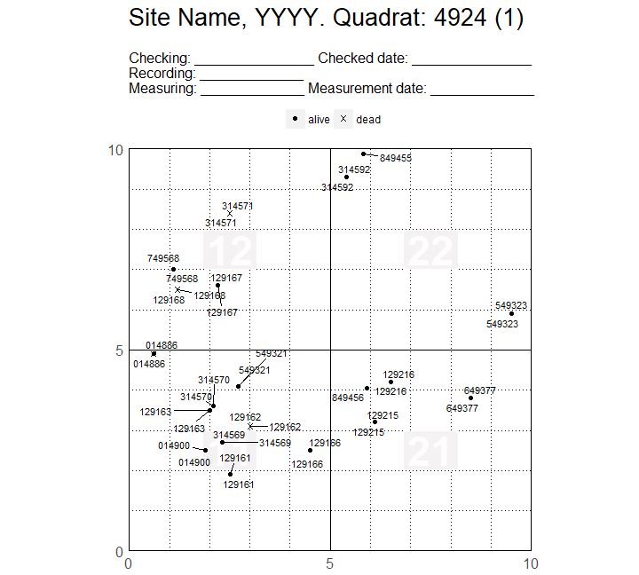
You can output a .pdf with pdf().
pdf("example-some_site.pdf", paper = "a4")
maps
#> $`4924`
#>
#> $<NA>
#>
#> $<NA>
#>
#> $<NA>
dev.off()
#> png
#> 2
What Does map_tag() Do?
Let’s review what has just happened. Although your ViewFullTable may have data of multiple censuses, map_tag() focuses exclusively on the latest census (via PlotNameCensus). map_tag() plots not the status of individual stems but the status of a tree. That is, if in the latest census at least one stem of a tree has status “alive”, then map_tag() plots its status as “alive”; if no stem is “alive”, map_tag() plots its status as “other”. Why “other” and not “dead”? Because stems are classified not simply as “dead” or “alive”: if it is not “alive”, the value of status may be, for example, “dead” for one stem of a particular tree, and “broken below” for another stem of the same tree. Yet map_tree() is designed to plot only one value of status per individual tag. The solution is to group all values that are not “alive” into the single category “other”.
OK, that was the bad news – map_tag() won’t let you change the values of the variable status. The good news is that you can change almost anything else. You will learn how to do that in the rest of this tutorial.
Preparation: Packages and Data
The packages you will use are map, fgeo.utils, ggplot2 and dplyr. map contains the function map_tag(); fgeo.utils contains utility functions; and ggplot2 and dplyr provide powerful tools for vizualizing and wrangling data. (These packages are part of the tidyverse (https://www.tidyverse.org/) – a collection of R packages designed for data science. All packages share an underlying philosophy and common APIs.)
# install_github("forestgeo/map")
library(map)
library(fgeo.utils)
library(dplyr)
# Print only a few rows of data framed to save time and space
options(dplyr.print_min = 6, dplyr.print_max = 6)From now on, The data you will use is an example data set from Barro Colorado Island made public in 2012 (see https://repository.si.edu/handle/10088/20925 and ?bciex::bci12vft_mini).
# Subset of a public ViewFullTable from BCI (source:
# https://repository.si.edu/handle/10088/20925).
# Convert to tibble (modern dataframe) for better printing
bci_vft <- as_tibble(bciex::bci12vft_mini)
glimpse(bci_vft)
#> Observations: 4,374
#> Variables: 28
#> $ MeasureID <int> 2, 3, 4, 5, 6, 7, 8, 9, 10, 11, 12, 13, 14, 1...
#> $ PlotID <int> 1, 1, 1, 1, 1, 1, 1, 1, 1, 1, 1, 1, 1, 1, 1, ...
#> $ Plot <chr> "bci", "bci", "bci", "bci", "bci", "bci", "bc...
#> $ Family <chr> "Lecythidaceae", "Myristicaceae", "Malvaceae"...
#> $ GenusSpecies <chr> "Gustavia superba", "Virola surinamensis", "Q...
#> $ Genus <chr> "Gustavia", "Virola", "Quararibea", "Protium"...
#> $ SpeciesName <chr> "superba", "surinamensis", "asterolepis", "te...
#> $ SubSpeciesName <chr> "NULL", "NULL", "NULL", "NULL", "NULL", "NULL...
#> $ SpeciesID <int> 460, 1075, 871, 828, 108, 828, 871, 871, 1144...
#> $ Mnemonic <chr> "gustsu", "virosu", "quaras", "protte", "bros...
#> $ QuadratID <int> 1250, 1250, 1250, 1249, 1249, 1248, 1248, 124...
#> $ QuadratName <chr> "4924", "4924", "4924", "4923", "4923", "4922...
#> $ x <dbl> 14.1, 10.5, 13.5, 12.7, 1.9, 3.7, 3.0, 3.0, 1...
#> $ y <dbl> 8.3, 8.9, 18.3, 9.3, 13.5, 16.5, 12.6, 12.6, ...
#> $ gx <dbl> 994, 990, 994, 993, 982, 984, 983, 983, 996, ...
#> $ gy <dbl> 488, 489, 498, 469, 474, 456, 453, 453, 447, ...
#> $ TreeID <int> 19, 21, 23, 24, 25, 29, 30, 30, 32, 33, 34, 3...
#> $ Tag <chr> "000002", "000004", "000006", "000007", "0000...
#> $ StemID <int> 1, 1, 7, 1, 1, 6, 2, 3, 2, 1, 1, 1, 6, 6, 1, ...
#> $ StemTag <chr> NA, NA, "NULL", NA, NA, "NULL", "NULL", "NULL...
#> $ PrimaryStem <chr> "main", "main", "main", "main", "main", "main...
#> $ CensusID <int> 6, 6, 6, 6, 6, 6, 6, 6, 6, 6, 6, 6, 6, 6, 6, ...
#> $ PlotCensusNumber <int> 6, 6, 6, 6, 6, 6, 6, 6, 6, 6, 6, 6, 6, 6, 6, ...
#> $ DBH <int> 304, 357, 313, 456, 1290, NA, 492, 33, NA, 42...
#> $ HOM <dbl> 3.00, 1.30, 3.00, 1.30, 5.20, NA, 3.20, 1.30,...
#> $ ExactDate <date> 2005-10-14, 2005-10-11, 2005-10-14, 2005-10-...
#> $ ListOfTSM <chr> "B,cylY", "NULL", "B,cylY", "NULL", "B,cylN",...
#> $ Status <chr> "alive", "alive", "alive", "alive", "alive", ...bci_vft1 <- filter(bci_vft, PlotID == 1)Not all data sets may be named appropriately. map_tag() expects some variables to have specific names. If the name of your variables is different than expected, you’ll get an error.
# Fails
map_tag(bci_vft1)
#> Error: Ensure your data set has these variables:
#> tag, qx, qy, status, quadratname, censusid, plotidReading the error message will help you identify which variables you need to rename.
bci_vft1_rnm <- dplyr::rename(bci_vft1, qx = x, qy = y)
# Using lowercase names for simiplicity
names(bci_vft1_rnm) <- tolower(names(bci_vft1_rnm))With the techniques you’ll learn here, you can produce maps of an entire data set, or of just a few quadrats. To save space, let’s focus just on (any) one quadrat.
any_quadrat <- sample(unique(bci_vft1_rnm$quadratname), 1)
filter(bci_vft1_rnm, quadratname == any_quadrat)
#> # A tibble: 381 x 28
#> measureid plotid plot family genusspecies
#> <int> <int> <chr> <chr> <chr>
#> 1 5 1 bci Burseraceae Protium tenuifolium
#> 2 6 1 bci Moraceae Brosimum alicastrum
#> 3 8406 1 bci Fabaceae-papilionoideae Swartzia simplex
#> 4 8407 1 bci Meliaceae Trichilia tuberculata
#> 5 11703 1 bci Boraginaceae Cordia lasiocalyx
#> 6 11704 1 bci Boraginaceae Cordia lasiocalyx
#> # ... with 375 more rows, and 23 more variables: genus <chr>,
#> # speciesname <chr>, subspeciesname <chr>, speciesid <int>,
#> # mnemonic <chr>, quadratid <int>, quadratname <chr>, qx <dbl>,
#> # qy <dbl>, gx <dbl>, gy <dbl>, treeid <int>, tag <chr>, stemid <int>,
#> # stemtag <chr>, primarystem <chr>, censusid <int>,
#> # plotcensusnumber <int>, dbh <int>, hom <dbl>, exactdate <date>,
#> # listoftsm <chr>, status <chr>Customizing Your Maps
This section shows how you can change the default of your maps (see also ?map_tag()). For example, you can customize the plot title, and the points and tags.
maps <- map_tag(bci_vft1_rnm,
title_quad = "BCI 2012", point_size = 3, point_shape = c(17, 6), tag_size = 5
)
#> Warning in do.call(cond, list(customized)): Duplicated values were detected
#> * Likely you should filter only one CensusID and retry.
maps[1]
#> $`4915`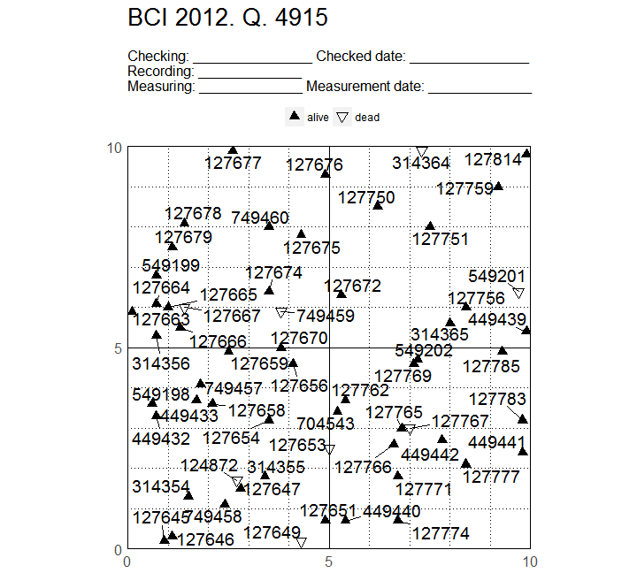
Customizing The Header
The header can be customized in two ways. One ways it to pass a string to the argument header.
map_tag(bci_vft1_rnm, title_quad = "BCI 2012", header = "My header")[1]
#> Warning in do.call(cond, list(customized)): Duplicated values were detected
#> * Likely you should filter only one CensusID and retry.
#> $`4915`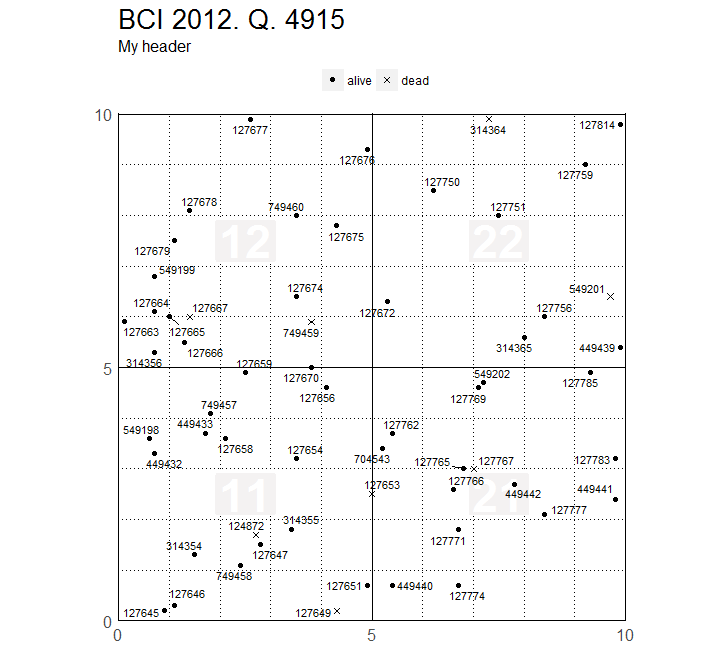
The string can be multi-lined; to insert line brakes, use “\n”.
map_tag(bci_vft1_rnm, title_quad = "BCI 2012",
header = "Line 1: _________\nLine 2:\nLine 3:....................."
)[1]
#> Warning in do.call(cond, list(customized)): Duplicated values were detected
#> * Likely you should filter only one CensusID and retry.
#> $`4915`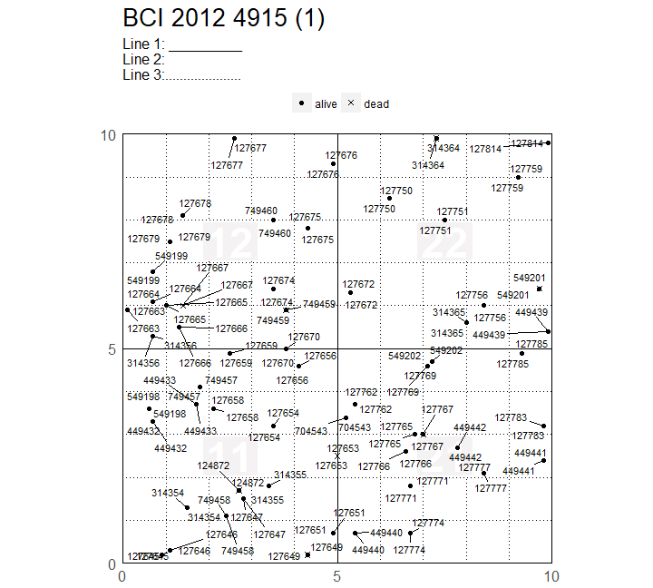
The second way is to use map_tag_header() (see ?map_tag_header()).
map_tag(bci_vft1_rnm, title_quad = "BCI 2012", header = map_tag_header())[1]
#> Warning in do.call(cond, list(customized)): Duplicated values were detected
#> * Likely you should filter only one CensusID and retry.
#> $`4915`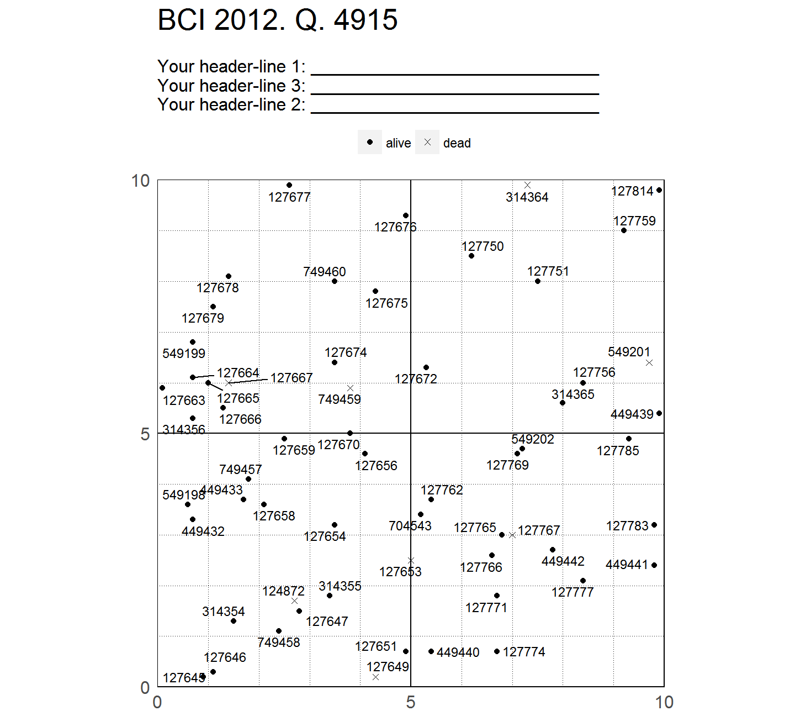
Using Pre-Made and Custom Themes
Similarly to how you customized the header, you can also customize the plot theme. By default, theme = theme_map_quad() (see ?theme_map_quad()); but you can either use any pre-made theme (see ?ggplot2::theme_bw) or adapt teak the defaults of theme_map_quad().
This is how you can use a pre-made theme.
library(ggplot2)
# Using a pre-made theme from ggplot2
map_tag(bci_vft1_rnm, title_quad = "BCI 2012", theme = theme_gray())[1]
#> Warning in do.call(cond, list(customized)): Duplicated values were detected
#> * Likely you should filter only one CensusID and retry.
#> $`4915`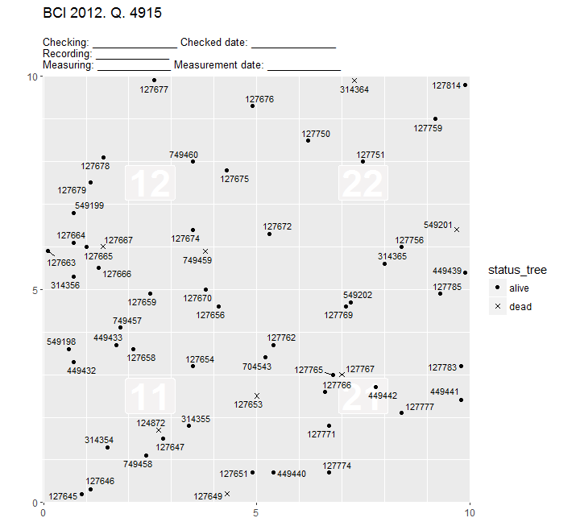
And this is how you can use a custom theme (see ?ggplot2::theme()).
# Customizing the default theme of map_tag()
theme_small_change <- theme_map_tag(legend.position = "bottom")
map_tag(bci_vft1_rnm, title_quad = "BCI 2012", theme = theme_small_change)[1]
#> Warning in do.call(cond, list(customized)): Duplicated values were detected
#> * Likely you should filter only one CensusID and retry.
#> $`4915`
# Customizing the default theme extreemely, to show flexibility
theme_extreeme_change <- ggplot2::theme(
legend.position = "bottom",
legend.title = element_blank(),
legend.text = element_text(size = 8, colour = "red"),
text = element_text(size = 11, face = "bold.italic", colour = "white"),
plot.background = element_rect(fill = "black"),
plot.margin = margin(2, 2, 2, 2, "cm"),
strip.background = element_rect(fill = "darkgreen"),
strip.text = element_text(colour = "white"),
# make grid to dissapear by matching background colour
panel.background = element_rect(fill = "lightgreen"),
panel.grid.minor = element_line(colour = "black", linetype = "dotted"),
panel.grid.major = element_line(colour = "black")
)
map_tag(bci_vft1_rnm, title_quad = "BCI 2012", theme = theme_extreeme_change)[1]
#> Warning in do.call(cond, list(customized)): Duplicated values were detected
#> * Likely you should filter only one CensusID and retry.
#> $`4915`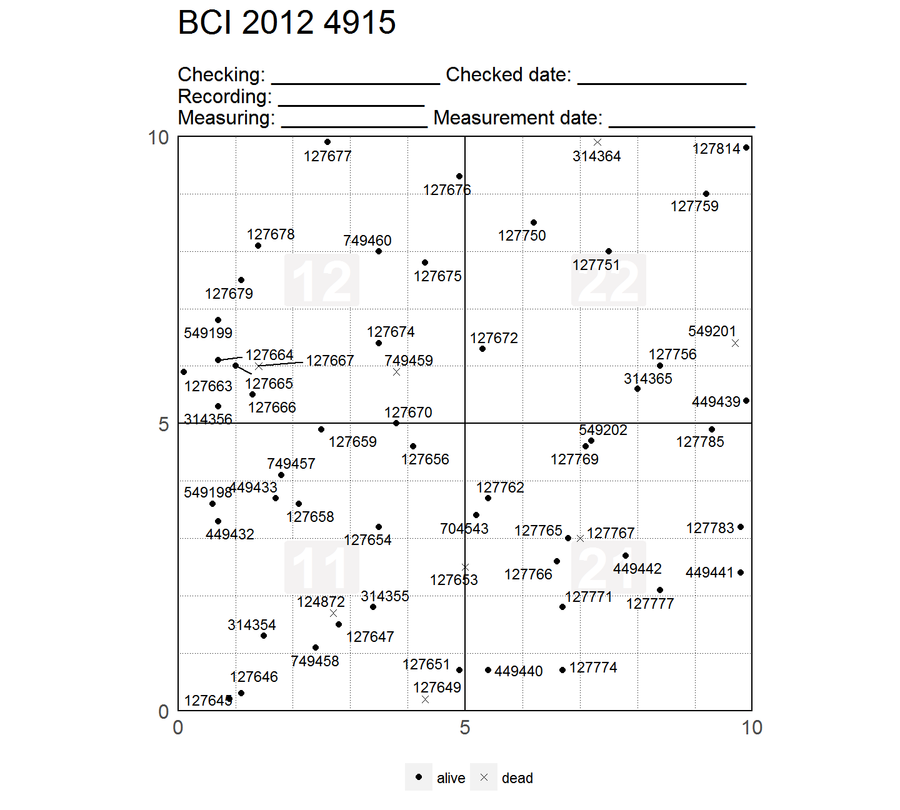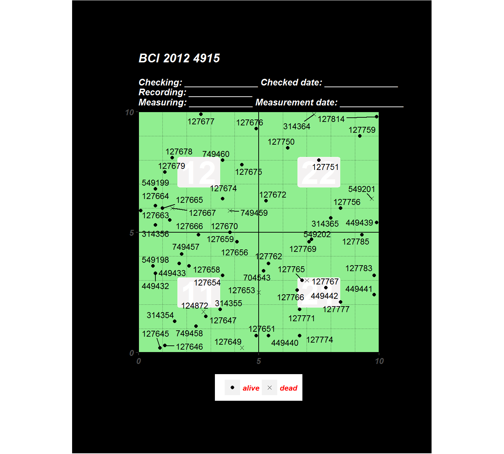
Extending The Grid Beyond the Plot Limits
Although they shouldn’t, trees sometimes are located beyond the limits of a quadrat. For example, if the side of your quadrats is 20 meters, some trees may plot at, say, qx = 20.5, or qy = 21. In such cases you may want to extend the plot grid to encompass those odd trees. To extend the grid use the argument shrink. (The example below has no trees beyond the quadrat limits, but hopefully you’ll still understand when to use move_edge.)
map_tag(bci_vft1_rnm, title_quad = "BCI 2012", move_edge = 0.4)[4]
#> Warning in do.call(cond, list(customized)): Duplicated values were detected
#> * Likely you should filter only one CensusID and retry.
#> $`4918`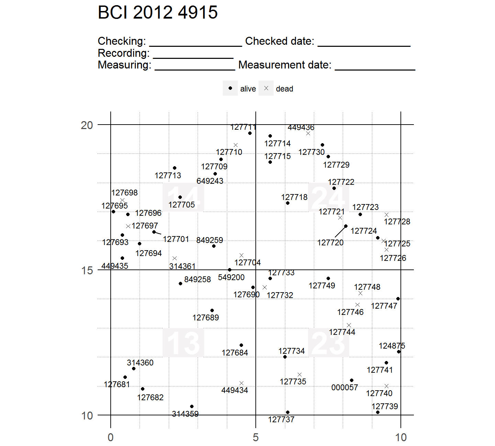
Customizing the Dimension of Quadrats and Subquadrats
You can customize the dimension of your quadrats and subquadrats to fit the range of qx and qy of your data. Let’s examine what the range is for the data you have been using so far.
qx_and_qy_variables <- select(bci_vft1_rnm, qx, qy)
lapply(qx_and_qy_variables, range)
#> $qx
#> [1] 0.0 19.9
#>
#> $qy
#> [1] 0.0 19.9The range is between around 0 and 20. That is why we have been using using the default quadrat dimension of 20 meters (x_q = 20; and y_sq = x_q = 20), and the default subquadrat dimension of 5 meters (x_sq = 5; and y_sq = x_sq = 5).
map_tag(bci_vft1_rnm, title_quad = "BCI 2012",
x_q = 20, x_sq = 5,
y_q = 20, y_sq = 5
)[1]
#> Warning in do.call(cond, list(customized)): Duplicated values were detected
#> * Likely you should filter only one CensusID and retry.
#> $`4915`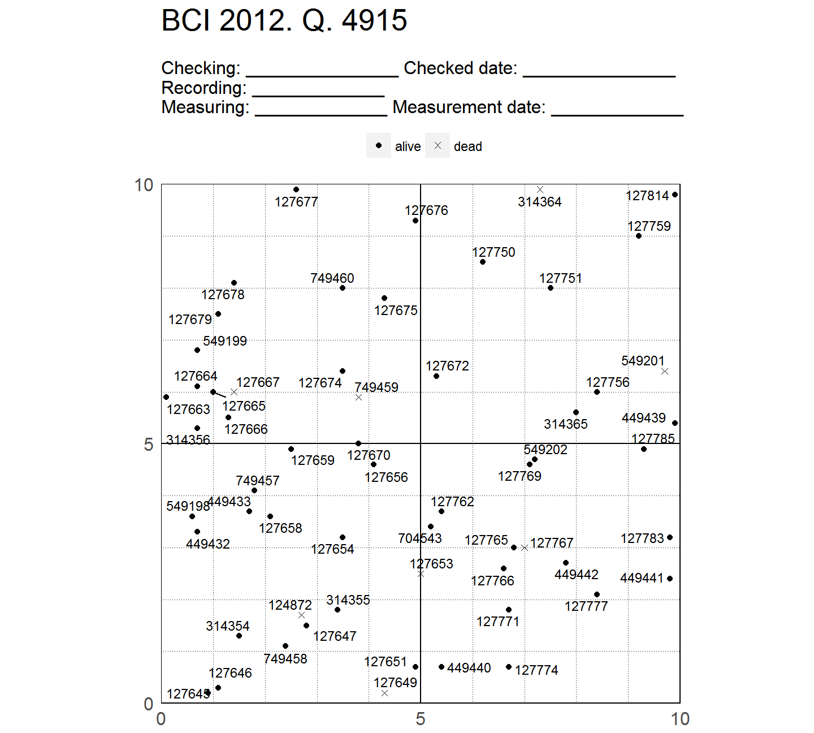
By default, y_q will be the same as x_q – so you don’t have to provide both (only x_q is mandatory). And the same is true for y_sq and x_sq. With this data – with qx and qy ranging 0-20 meters – the quadrat and subquadrat dimensions used above are the right ones. But map_tag() won’t complain if you choose different parameters; so you have to be careful not to shoot yourself on the foot.
The following two examples demonstrate the use wrong dimensions. Let’s first use dimensions that are smaller than the range of qx and qy.
map_tag(bci_vft1_rnm,
title_quad = "BCI 2012", x_q = 10, x_sq = 2.5,
# if not extended, the lines surrounding the map won't plot
move_edge = 0.25
)[1]
#> Warning in do.call(cond, list(customized)): Duplicated values were detected
#> * Likely you should filter only one CensusID and retry.
#> $`4915`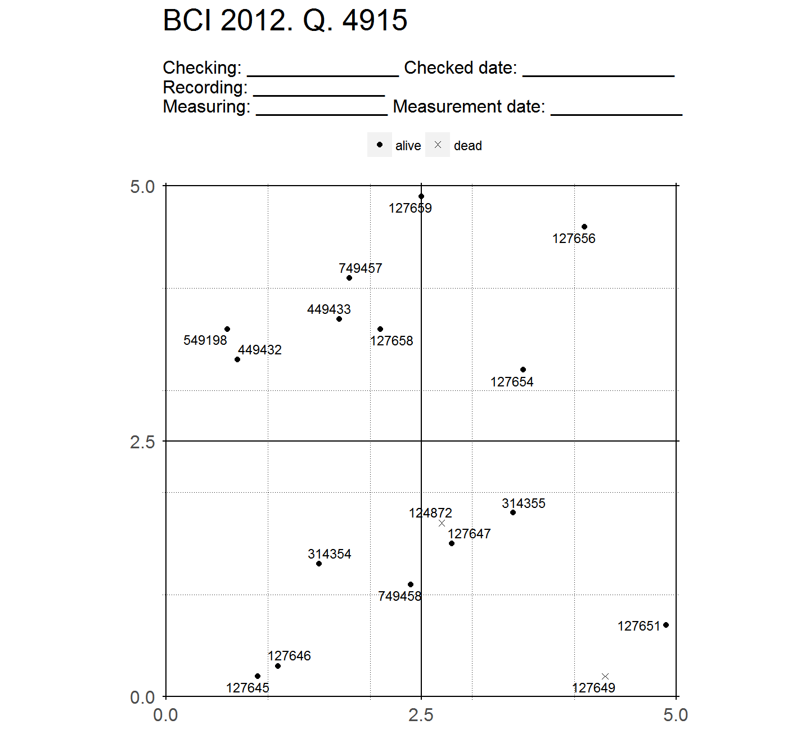
And now let’s use dimensions that are larger than the range of the data.
# Using
map_tag(bci_vft1_rnm,
title_quad = "BCI 2012", x_q = 100, x_sq = 25,
)[1]
#> Warning in do.call(cond, list(customized)): Duplicated values were detected
#> * Likely you should filter only one CensusID and retry.
#> $`4915`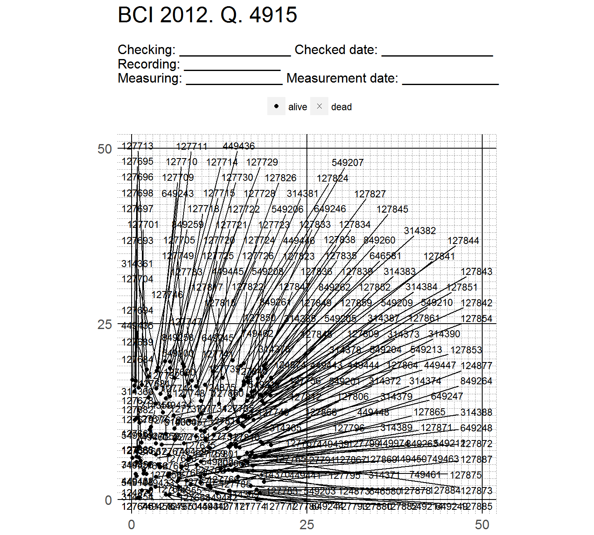
This image should flag that you have this kind of problem – by which the range of data is smaller than the dimensions you set for your quadrat and subquadrat. Notice that the points (the actual positions of the trees) are all between qx and qy ranging 0-20. The tags, however, go beyond 20 because they automatically repel themselves to avoid overlapping.
The Right Dimensions for the Right Data
Had qx and qy of your data ranged 0-100, then yes – the appropriate quadrat and subquadrat dimensions to use would be 100 and 25.
# Creating new data set with qx and qy ranging 0-100
bigger <- bci_vft1_rnm
n <- nrow(bigger)
bigger$qx <- sample(0:100, n, replace = TRUE)
bigger$qy <- sample(0:100, n, replace = TRUE)
map_tag(
bigger,
x_q = 100, x_sq = 25,
move_edge = -1.75
)[1]
#> Warning in do.call(cond, list(customized)): Duplicated values were detected
#> * Likely you should filter only one CensusID and retry.
#> $`4915`
And if qx and qy of your data range 0-10, then the appropriate quadrat dimension to use would be 10 and 2.5.
# Creating new data set with qx and qy ranging 0-100
smaller <- bci_vft1_rnm
n <- nrow(smaller)
smaller$qx <- sample(0:10, n, replace = TRUE)
smaller$qy <- sample(0:10, n, replace = TRUE)
map_tag(smaller, x_q = 10, x_sq = 2.5, move_edge = 0.25)[1]
#> Warning in do.call(cond, list(customized)): Duplicated values were detected
#> * Likely you should filter only one CensusID and retry.
#> $`4915`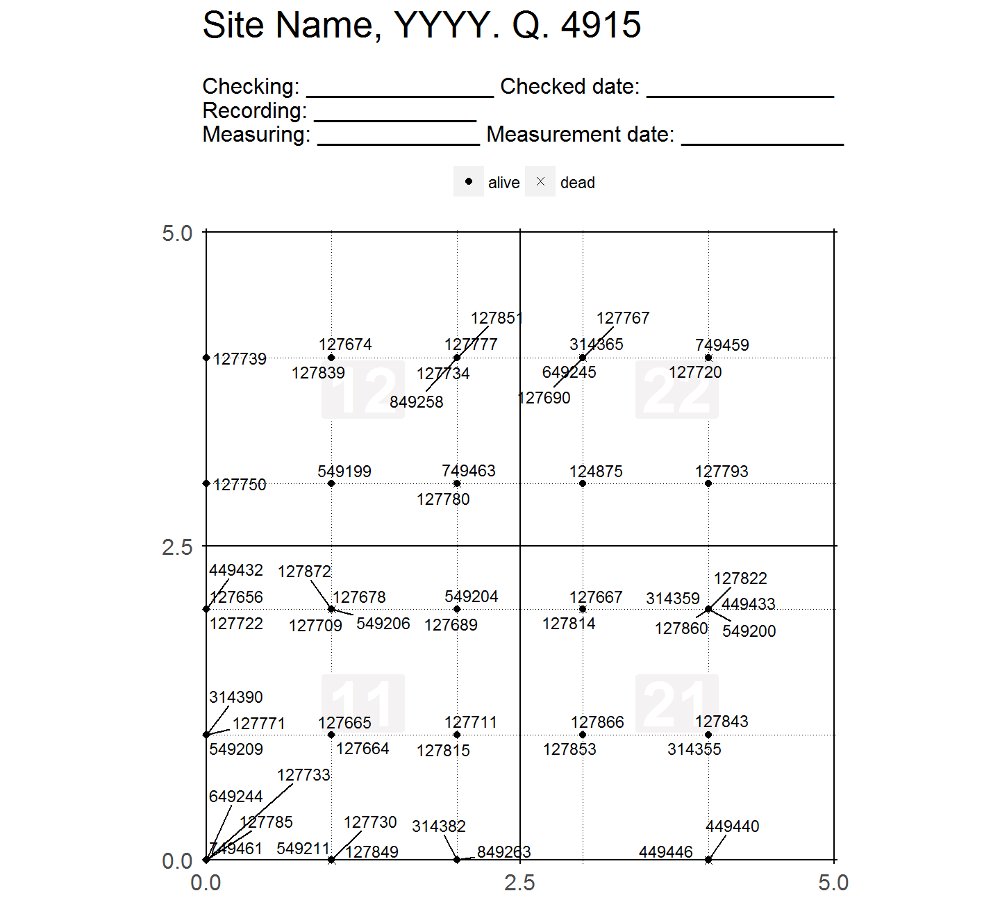
Calling fgeo.utils::add_subquad() Directly
If you want to only calculate the variable subquadrat, you don’t need to use map_tag() – can directly call fgeo.utils::add_subquad().
with_subquadrat <- fgeo.utils::add_subquad(bci_vft1_rnm, x_q = 20, x_sq = 5)
select(
with_subquadrat,
# reorder variables to show first what's new
subquadrat, qx, qy, everything()
)
#> # A tibble: 4,374 x 29
#> subquadrat qx qy measureid plotid plot family
#> <chr> <dbl> <dbl> <int> <int> <chr> <chr>
#> 1 32 14.1 8.3 2 1 bci Lecythidaceae
#> 2 32 10.5 8.9 3 1 bci Myristicaceae
#> 3 34 13.5 18.3 4 1 bci Malvaceae
#> 4 32 12.7 9.3 5 1 bci Burseraceae
#> 5 13 1.9 13.5 6 1 bci Moraceae
#> 6 14 3.7 16.5 7 1 bci Burseraceae
#> # ... with 4,368 more rows, and 22 more variables: genusspecies <chr>,
#> # genus <chr>, speciesname <chr>, subspeciesname <chr>, speciesid <int>,
#> # mnemonic <chr>, quadratid <int>, quadratname <chr>, gx <dbl>,
#> # gy <dbl>, treeid <int>, tag <chr>, stemid <int>, stemtag <chr>,
#> # primarystem <chr>, censusid <int>, plotcensusnumber <int>, dbh <int>,
#> # hom <dbl>, exactdate <date>, listoftsm <chr>, status <chr>But if you don’t mind going through a little more trouble, you can also get the subquadrat variable from the data the underlies the maps.
maps <- map_tag(bci_vft1_rnm, x_q = 20, x_sq = 5)
#> Warning in do.call(cond, list(customized)): Duplicated values were detected
#> * Likely you should filter only one CensusID and retry.
data_list <- purrr::map(maps, "data")
data_combined <- purrr::reduce(data_list, rbind)
select(
data_combined,
subquadrat, qx, qy, everything()
)
#> # A tibble: 3,831 x 15
#> subquadrat qx qy tag status quadratname censusid plotid
#> <chr> <dbl> <dbl> <chr> <chr> <chr> <int> <int>
#> 1 11 2.7 1.7 124872 alive 4915 6 1
#> 2 11 0.9 0.2 127645 alive 4915 6 1
#> 3 11 1.1 0.3 127646 alive 4915 6 1
#> 4 11 2.8 1.5 127647 alive 4915 6 1
#> 5 11 4.3 0.2 127649 alive 4915 6 1
#> 6 11 4.9 0.7 127651 alive 4915 6 1
#> # ... with 3,825 more rows, and 7 more variables: status_tree <chr>,
#> # page <dbl>, x1 <dbl>, x2 <dbl>, y1 <dbl>, y2 <dbl>, split <chr>Acknowledgements
I thank for ideas and guidance to Suzanne Lao, Stuart Davis, Shameema Jafferjee Esufa, David Kenfack and Anudeep Singh. Andudeep also wrote the algorithm of fgeo.utils::add_subquad() (which I translated from SQL to R).